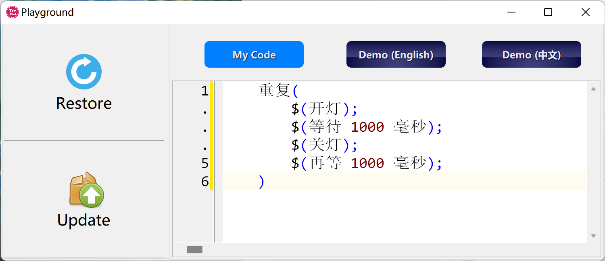

0. 认识开发板
0.1 ING91881B 开发板
确保开发板上的跳帽拔插状态与上图一致。
1. 下载 Playground
- 适用于 ING91881B 开发板： 下载 （镜像）
下载的 Playground 软件为 7-Zip 自解压压缩包。运行软件，任意选择一个目录（下文以 C:\temp\游乐园 为例）完成解压缩。 Playground 为纯绿色软件，体验之后，如果不想保留，直接将整个目录删除即可。
2. Try-Me 软件
进入 C:\temp\游乐园 目录，打开（运行）一个名为“try-me”的程序：
左面两个按钮的功能分别为：
- Restore：将开发板恢复为初始设置
- Update：将编写的程序更新（下载、部署）到开发板
上面三个按钮的功能分别为：
- My Code：查看编辑您的代码
- Demo (English)：查看英文版演示代码
- Demo (中文)：查看中文版演示代码
3. 连接开发板
将开发板连接到 Windows 10 及以上的计算机。首次连接时需要稍候片刻以待计算机自动安装驱动程序，安装成功后，Windows 会做出“设备已就绪”的提醒。 打开 Windows 设备管理器，可发现一个串口设备，其中的串口号由 Windows 自动分配。
请不要连接多个开发板，也不要连接其它的 J-Link、DAPLink 调试器，以免干扰串口检测功能。
4. 初始化开发板
点击 Restore 按钮，屏幕上将出现如下提示信息：
USING COM3
wait for handshaking...
这里的 COM 号码与设备管理器里显示的一致。出现上述提示信息后，按下开发板上的“下载键”，一套 Playground 支撑程序就会被下载到开发板。 如果一切顺利会看到如下（类似）信息：
USING COM3
baud -> 921600
downloading platform.bin @ 0x4000 ...
|████████████████████████████████████████████████████████████| 100.0%
downloading default.bin @ 0x26000 ...
|████████████████████████████████████████████████████████████| 100.0%
downloading boot.bin @ 0x44000 ...
|████████████████████████████████████████████████████████████| 100.0%
-
对于 ING91881B 开发板
初始化完成后，8 个 LED 灯会循环点亮。
5. 编写一个程序
点击 Demo (中文) 按钮，可以看到许多用中文编写的演示程序。每段程序由一对 “```c” 和 “```” 包围。从中选择一段程序，复制。然后点击 My Code，粘贴替换里面的代码。例如：

显而易见，这段文字说的是开灯，等待 1 秒，关灯，再等待 1 秒，再打开，循环往复。
6. 更新开发板
点击 Update. 按钮，屏幕上将出现如下的类似信息：
USING COM3
building...done
starting download mode...done
baud -> 921600
downloading ../project/get_started.bin @ 0x26000 ...
|████████████████████████████████████████████████████████████| 100.0%
观察开发板，可看到一排 LED 灯在周期性地亮、灭，跟文字里的描述一致。恭喜！您已成功编写、编译并下载了一段程序。
7. 下一步
接下来，您可以在游乐园 半日游， 或者 下载 SDK，正式开启桃芯科技系列芯片上的开发之旅。
8. 疑难解答
-
无法找到串口：
No UART found打开 Windows 设备管理器检查开发板是否已被 Windows 正确识别，驱动程序已自动安装。
-
更新开发板时可能出现的错误
现象 解决方法 buiding...fail检查粘贴的代码是否过多，或者有缺失；
检查编写的代码是否使用了全角标点starting download mode...fail尝试重新插拔开发板；
重新初始化开发板进度条中途停止 重新初始化开发板 -
初始化开发板时如果出现错误
再试一次。